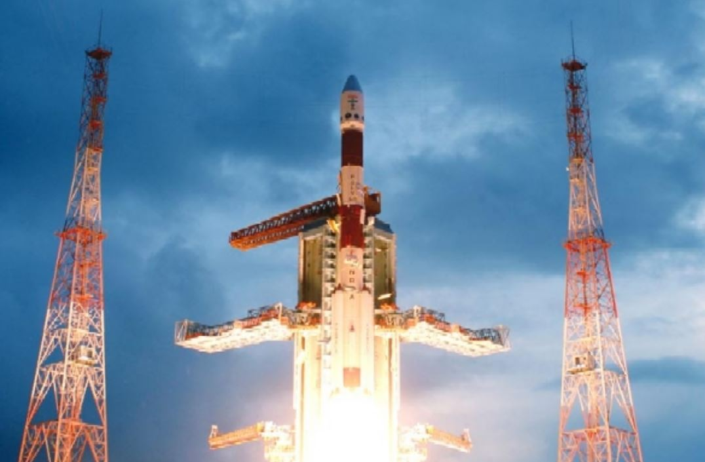

Chandrayan-1
Chandrayaan-1, launched on October 22, 2008, was India's first mission to the Moon, marking a significant milestone in space exploration by discovering water molecules on the lunar surface.
Mission Overview
- Launch Details: Chandrayaan-1 was launched by the Indian Space Research Organisation (ISRO) using a Polar Satellite Launch Vehicle (PSLV-XL) from the Satish Dhawan Space Centre in Sriharikota, India. The launch took place on October 22, 2008.
- Mission Duration: The spacecraft operated until August 29, 2009, completing over 3,400 orbits around the Moon.
Objectives and Achievements
- Scientific Goals: The primary objectives included mapping the Moon's surface, studying its mineral composition, and searching for water ice, particularly in the polar regions.
- Key Discoveries: One of the most significant achievements was the discovery of water molecules and hydroxyl on the lunar surface, which was confirmed by the Moon Mineralogy Mapper (M3) instrument. This finding has profound implications for future lunar exploration and potential habitation.
Instruments and Technology
- Scientific Payloads: Chandrayaan-1 carried 11 scientific instruments developed by ISRO and international partners, including:
- Moon Mineralogy Mapper (M3): An imaging spectrometer that helped confirm the presence of water on the Moon.
- Terrain Mapping Camera (TMC): Provided high-resolution maps of the lunar surface.
- Lunar Laser Ranging Instrument (LLRI): Measured the height of the lunar surface topography.
- Impact Probe: The mission included the deployment of the Moon Impact Probe (MIP), which impacted the Moon's surface, providing additional data about the lunar atmosphere and surface composition.
Significance
Chandrayaan-1 was a landmark mission for India, establishing the country as a key player in space exploration. It demonstrated India's capability to conduct complex space missions and laid the groundwork for future lunar missions, including Chandrayaan-2 and Chandrayaan-3, which aimed to further explore the Moon's surface and potential resources.
In summary, Chandrayaan-1 not only advanced scientific knowledge about the Moon but also inspired a new generation of space exploration initiatives in India and beyond.
